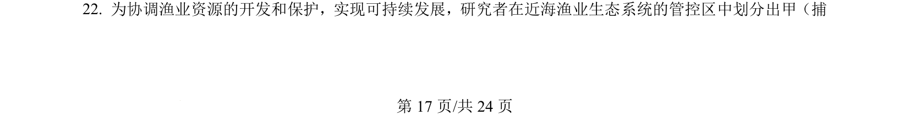
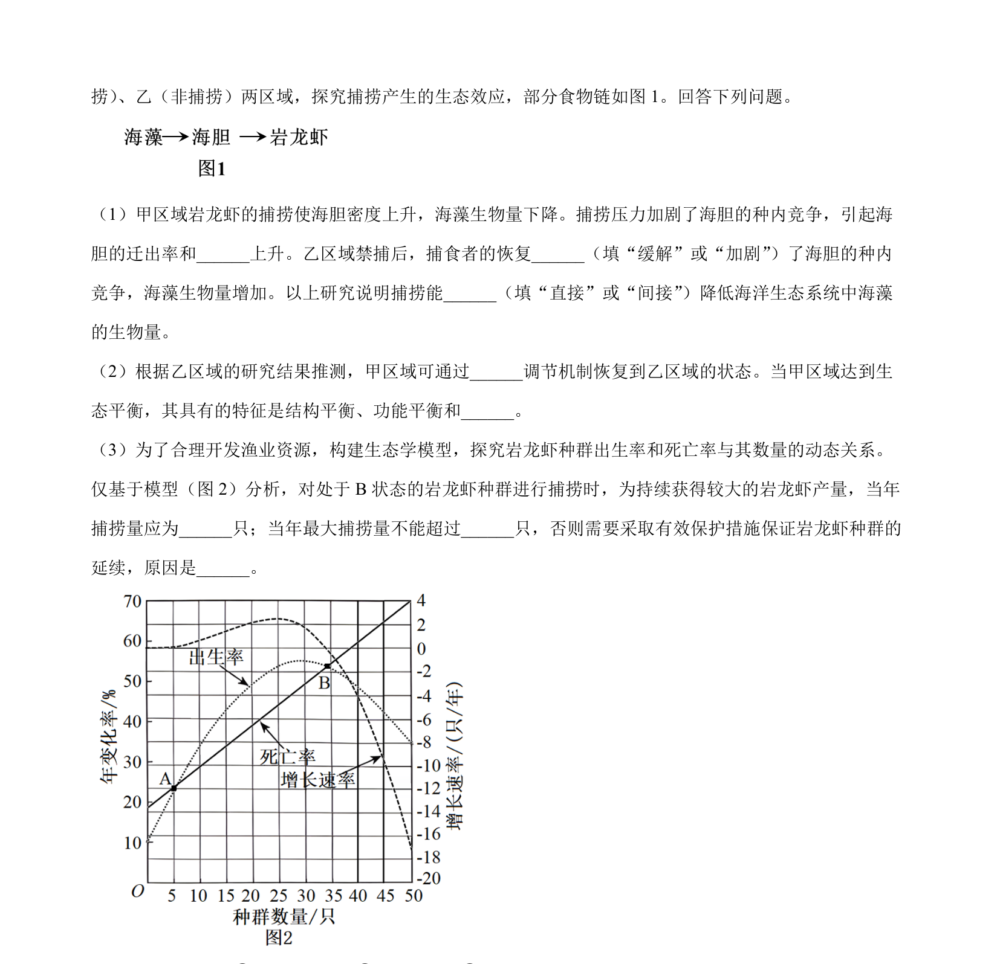
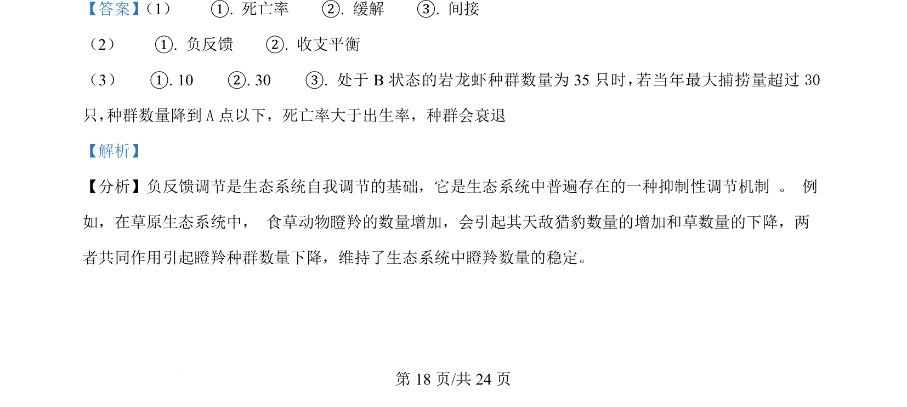
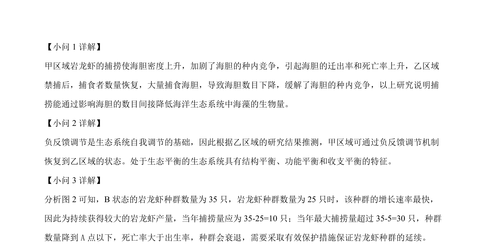

2024-辽宁-22
吉林2024卷辽宁不分题22题型解答难中
考点：生态系统 可持续发展 渔业资源管理
题面


摘要
本题考查近海渔业生态系统的资源管理与可持续发展策略。
关联考点
答案与解析


📄 原 PDF 第 17 页：素材/真题/吉林/2008-2024·（吉林）生物高考真题/2024年高考生物试卷（辽宁）（解析卷）.pdf
题干文本
- 为协调渔业资源的开发和保护，实现可持续发展，研究者在近海渔业生态系统的管控区中划分出甲（捕
的
解析文本